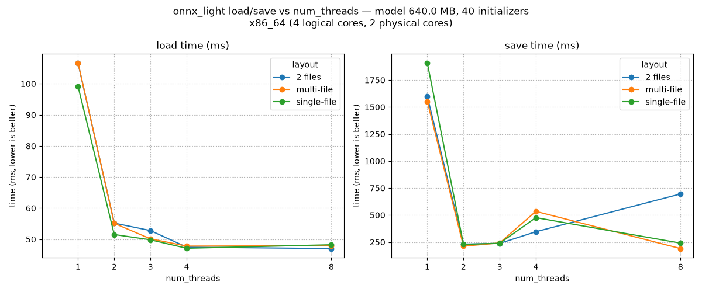

Note
Go to the end to download the full example code.
Number of threads used to load and save ONNX models#
This example benchmarks onnx_light.onnx.load() and
onnx_light.onnx.save() while varying the num_threads parameter
across three on-disk layouts:
single-file – everything packed in one
.onnxfile (no external data).2 files – one
.onnxfile plus one external weights file.multi-file – one
.onnxfile plus several external weights files, produced by capping each file withmax_external_file_size.
For each (layout, num_threads) combination the script measures the median wall-clock time over a few iterations and plots a summary chart so the effect of parallelism can be compared at a glance.
import os
import platform
import shutil
import time
import matplotlib.pyplot as plt
import numpy as np
import pandas
import onnx_light.onnx.helper as oh
import onnx_light.onnx.numpy_helper as onh
import onnx_light.onnx as onnxl
N_INIT = 8 if os.environ.get("UNITTEST_GOING") == "1" else 40
DIM = 128 if os.environ.get("UNITTEST_GOING") == "1" else 2048
N_ITER = 2 if os.environ.get("UNITTEST_GOING") == "1" else 5
THREAD_COUNTS = (1, 2) if os.environ.get("UNITTEST_GOING") == "1" else (1, 2, 3, 4, 8)
def _detect_processor_name() -> str:
"""Returns a human-readable processor name across common platforms."""
# ``platform.processor()`` is often empty on Linux; fall back to
# ``/proc/cpuinfo`` so the chart title shows something meaningful.
name = platform.processor() or ""
if not name and os.path.exists("/proc/cpuinfo"):
try:
with open("/proc/cpuinfo", encoding="utf-8") as f:
for line in f:
if line.startswith("model name"):
name = line.split(":", 1)[1].strip()
break
except OSError:
pass
return name or platform.machine() or "unknown"
def _detect_physical_cores() -> int:
"""Returns the number of physical CPU cores, or 0 if it cannot be determined."""
# On Linux, count unique (physical id, core id) pairs in ``/proc/cpuinfo``.
if os.path.exists("/proc/cpuinfo"):
try:
cores: set[tuple[str, str]] = set()
physical_id = ""
core_id = ""
with open("/proc/cpuinfo", encoding="utf-8") as f:
for line in f:
if line.startswith("physical id"):
physical_id = line.split(":", 1)[1].strip()
elif line.startswith("core id"):
core_id = line.split(":", 1)[1].strip()
elif line.strip() == "":
if physical_id and core_id:
cores.add((physical_id, core_id))
physical_id = ""
core_id = ""
if physical_id and core_id:
cores.add((physical_id, core_id))
if cores:
return len(cores)
except OSError:
pass
return 0
CPU_COUNT = os.cpu_count() or 1
PHYSICAL_CORE_COUNT = _detect_physical_cores()
PROCESSOR_NAME = _detect_processor_name()
print(f"Processor: {PROCESSOR_NAME}")
print(f"Logical cores: {CPU_COUNT}")
print(f"Physical cores: {PHYSICAL_CORE_COUNT or 'unknown'}")
def make_model(n_init: int = N_INIT, dim: int = DIM) -> onnxl.ModelProto:
"""Builds a synthetic ONNX model with *n_init* dense ``Gemm`` weights."""
initializers = []
nodes = []
inputs = [oh.make_tensor_value_info("X", onnxl.TensorProto.FLOAT, [None, dim])]
prev = "X"
for i in range(n_init):
weight_name = f"W{i}"
out_name = f"Y{i}"
w = np.random.randn(dim, dim).astype(np.float32)
initializers.append(onh.from_array(w, name=weight_name))
nodes.append(oh.make_node("Gemm", [prev, weight_name], [out_name], transB=1))
prev = out_name
outputs = [oh.make_tensor_value_info(prev, onnxl.TensorProto.FLOAT, [None, dim])]
graph = oh.make_graph(nodes, "bench_graph", inputs, outputs, initializer=initializers)
return oh.make_model(graph, opset_imports=[oh.make_opsetid("", 18)], ir_version=9)
def median_time(fn, n_iter: int = N_ITER) -> float:
"""Runs *fn* *n_iter* times and returns the median wall-clock time (seconds)."""
timings = []
for _ in range(n_iter):
begin = time.perf_counter()
fn()
timings.append(time.perf_counter() - begin)
return float(np.median(timings))
Processor: x86_64
Logical cores: 4
Physical cores: 2
Build the model and prepare on-disk layouts#
Three reference files are produced once and then reused for the load benchmarks: a single packed file, a model with one external data file, and a model whose external data is split into several files.
model = make_model()
size_mb = model.ByteSize() / 2**20
print(f"Model size: {size_mb:.2f} MB ({N_INIT} initializers, dim={DIM})")
out_dir = "temp_plot_threads_load_save"
os.makedirs(out_dir, exist_ok=True)
single_path = os.path.join(out_dir, "model_single.onnx")
two_path = os.path.join(out_dir, "model_two.onnx")
two_data = two_path + ".data"
multi_path = os.path.join(out_dir, "model_multi.onnx")
multi_data = multi_path + ".data"
# Build each reference file from the same in-memory ModelProto. We load
# the freshly written single-file model back through onnx_light so the
# external-data writers operate on an ``onnxl.ModelProto``.
onnxl.save(model, single_path)
onnxl_model = onnxl.load(single_path)
onnxl.save(onnxl_model, two_path, location=two_data)
# Cap each external weights file at roughly a third of the total payload
# so several files are produced regardless of the chosen DIM.
total_bytes = sum(len(init.raw_data) if init.raw_data else 0 for init in model.graph.initializer)
max_file = max(total_bytes // 3, 1)
onnxl.save(onnxl_model, multi_path, location=multi_data, max_external_file_size=max_file)
multi_files = sorted(p for p in os.listdir(out_dir) if p.startswith("model_multi.onnx.data"))
print(
f"Layouts ready: single ({os.path.getsize(single_path) / 2 ** 20:.2f} MB), "
f"2-file (graph={os.path.getsize(two_path) / 1024:.1f} KB, "
f"data={os.path.getsize(two_data) / 2 ** 20:.2f} MB), "
f"multi-file ({len(multi_files)} data files)"
)
Model size: 640.00 MB (40 initializers, dim=2048)
Layouts ready: single (640.00 MB), 2-file (graph=5.0 KB, data=640.00 MB), multi-file (4 data files)
Benchmark#
For each layout and thread count we time both the load operation
(reading from disk into an onnxl.ModelProto) and the save operation
(serializing the in-memory model back to a fresh path).
LAYOUTS = (
("single-file", single_path, None),
("2 files", two_path, two_data),
("multi-file", multi_path, multi_data),
)
rows = []
for layout_name, model_path, data_path in LAYOUTS:
for num_threads in THREAD_COUNTS:
def _load(path=model_path, threads=num_threads):
onnxl.load(path, num_threads=threads, load_external_data=True)
load_t = median_time(_load)
save_out = os.path.join(
out_dir, f"out_{layout_name.replace(' ', '_')}_t{num_threads}.onnx"
)
save_data = save_out + ".data" if data_path is not None else None
if data_path is None:
def _save(out=save_out, threads=num_threads):
onnxl.save(onnxl_model, out, num_threads=threads)
elif layout_name == "multi-file":
def _save(out=save_out, data=save_data, threads=num_threads, cap=max_file):
onnxl.save(
onnxl_model,
out,
location=data,
num_threads=threads,
max_external_file_size=cap,
)
else:
def _save(out=save_out, data=save_data, threads=num_threads):
onnxl.save(onnxl_model, out, location=data, num_threads=threads)
save_t = median_time(_save)
rows.append(
{
"layout": layout_name,
"num_threads": num_threads,
"load_ms": load_t * 1e3,
"save_ms": save_t * 1e3,
}
)
print(
f"{layout_name:<11} threads={num_threads:<2} "
f"load={load_t * 1e3:7.2f} ms save={save_t * 1e3:7.2f} ms"
)
df = pandas.DataFrame(rows)
print(df)
single-file threads=1 load= 99.12 ms save=1907.47 ms
single-file threads=2 load= 51.52 ms save= 228.86 ms
single-file threads=3 load= 49.82 ms save= 239.10 ms
single-file threads=4 load= 47.11 ms save= 476.41 ms
single-file threads=8 load= 48.24 ms save= 240.36 ms
2 files threads=1 load= 106.58 ms save=1597.24 ms
2 files threads=2 load= 55.20 ms save= 231.10 ms
2 files threads=3 load= 52.79 ms save= 237.81 ms
2 files threads=4 load= 47.48 ms save= 345.88 ms
2 files threads=8 load= 47.01 ms save= 695.50 ms
multi-file threads=1 load= 106.67 ms save=1551.16 ms
multi-file threads=2 load= 55.12 ms save= 212.28 ms
multi-file threads=3 load= 50.14 ms save= 242.11 ms
multi-file threads=4 load= 47.80 ms save= 534.26 ms
multi-file threads=8 load= 47.92 ms save= 189.99 ms
layout num_threads load_ms save_ms
0 single-file 1 99.116577 1907.472088
1 single-file 2 51.519790 228.864038
2 single-file 3 49.820572 239.098718
3 single-file 4 47.106584 476.411268
4 single-file 8 48.238657 240.356085
5 2 files 1 106.575854 1597.243806
6 2 files 2 55.196936 231.101946
7 2 files 3 52.794687 237.805113
8 2 files 4 47.476986 345.877658
9 2 files 8 47.006015 695.495339
10 multi-file 1 106.670440 1551.158366
11 multi-file 2 55.116510 212.283171
12 multi-file 3 50.142204 242.109224
13 multi-file 4 47.800240 534.262038
14 multi-file 8 47.916568 189.992704
Conclusion plot#
The two panels below summarise the impact of num_threads on each
layout. Lines that flatten quickly indicate operations that are
already I/O bound and gain little from additional threads, while a
steady downward slope reveals where parallelism pays off.
load_pivot = df.pivot(index="num_threads", columns="layout", values="load_ms")
save_pivot = df.pivot(index="num_threads", columns="layout", values="save_ms")
fig, axes = plt.subplots(1, 2, figsize=(12, 5), sharex=True)
for ax, pivot, title in (
(axes[0], load_pivot, "load time (ms)"),
(axes[1], save_pivot, "save time (ms)"),
):
for layout in pivot.columns:
ax.plot(pivot.index, pivot[layout], marker="o", label=layout)
ax.set_title(title)
ax.set_xlabel("num_threads")
ax.set_ylabel("time (ms, lower is better)")
ax.set_xlim(left=0)
ax.set_xticks(list(THREAD_COUNTS))
ax.grid(True, linestyle=":")
ax.legend(title="layout")
fig.suptitle(
f"onnx_light load/save vs num_threads — model {size_mb:.1f} MB, "
f"{N_INIT} initializers\n{PROCESSOR_NAME} "
f"({CPU_COUNT} logical cores, "
f"{PHYSICAL_CORE_COUNT or 'unknown'} physical cores)"
)
fig.tight_layout()
fig.savefig("plot_threads_load_save.png")

Cleanup#
shutil.rmtree(out_dir, ignore_errors=True)
Total running time of the script: (1 minutes 5.047 seconds)
Related examples

Measures loading and saving time for an ONNX model


Benchmark streaming vs in-memory alignment of external data